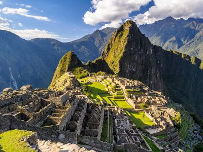
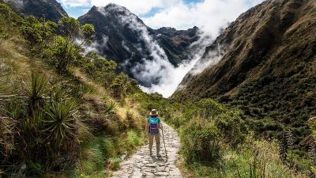
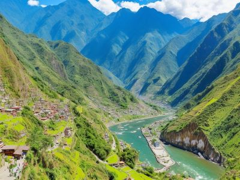

Descubre la Misteriosa Ciudadela de Machu Picchu
¡Te invitamos a embarcarte en una aventura única hacia la antigua ciudadela de Machu Picchu en Perú, una maravilla arqueológica enclavada en las majestuosas montañas de los Andes! En Travel Partners Agency, nos complace ofrecerte una experiencia inolvidable para explorar este misterioso y fascinante sitio del patrimonio mundial.
Atractivos Turísticos
-

Machu Picchu
Esta legendaria ciudadela inca es una de las maravillas arquitectónicas más impresionantes del mundo. Maravíllate con sus imponentes estructuras de piedra, sus terrazas agrícolas escalonadas y sus impresionantes vistas de los picos montañosos circundantes.
-

Camino Inca
Sumérgete en la historia y la cultura caminando por el famoso Camino Inca, una ruta de senderismo de varios días que te lleva a través de paisajes impresionantes y sitios arqueológicos fascinantes, culminando en la majestuosa Machu Picchu.
-

Aguas Calientes
Disfruta de la encantadora ciudad de Aguas Calientes, ubicada en el valle cerca de Machu Picchu. Relájate en las aguas termales naturales después de un día de exploración y disfruta de la hospitalidad local y la deliciosa gastronomía peruana.
Itinerario de 5 días y 4 noches
-
Día 1: Llegada a Cusco
-
1. Llegada al aeropuerto internacional de Cusco y traslado al hotel.
-
2. Tarde libre para aclimatarse a la altitud y explorar la encantadora ciudad de Cusco.
-
-
Día 2: Camino Inca - Día 1
-
1. Comienzo de la caminata por el Camino Inca hacia Machu Picchu.
-
2. Trekking a través de hermosos paisajes andinos y la visita a sitios arqueológicos a lo largo del camino.
-
-
Día 3: Camino Inca - Día 2
-
1. Continuación de la caminata por el Camino Inca, pasando por el famoso paso de Warmiwañusca (Paso de la Mujer Muerta).
-
2. Descenso hacia el campamento base para pasar la noche y descansar antes de llegar a Machu Picchu.
-
-
Día 4: Machu Picchu
-
1. Visita a Machu Picchu al amanecer para presenciar la majestuosidad del sitio en la luz de la mañana.
-
2. Recorrido guiado por las principales estructuras y áreas de la ciudadela, seguido de tiempo libre para explorar por cuenta propia
-
3. Descenso a Aguas Calientes para pasar la noche y relajarse después de la aventura.
-
-
Día 5: Regreso a Cusco
-
1. Mañana libre para disfrutar de Aguas Calientes antes de tomar el tren de regreso a Cusco.
-
2. Llegada a Cusco y traslado al aeropuerto para el vuelo de regreso.
-
Costo del Viaje
El costo del viaje puede variar dependiendo de las preferencias individuales y las opciones de alojamiento seleccionadas. Nuestro paquete básico de 5 días y 4 noches incluye:
-
1. Traslados desde y hacia el aeropuerto.
-
2. Alojamiento en hoteles de calidad en Cusco y Aguas Calientes.
-
3. Excursión al Camino Inca con guías expertos y equipo de camping.
-
4. Entrada a Machu Picchu y recorrido guiado.
-
5. Comidas durante la caminata en el Camino Inca.
Para obtener un presupuesto personalizado y más detalles sobre opciones de alojamiento, actividades adicionales y servicios complementarios, no dudes en contactarnos. Estamos aquí para hacer de tu viaje a Machu Picchu una experiencia inolvidable. ¡Reserva tu aventura hoy con Travel Partners Agency!